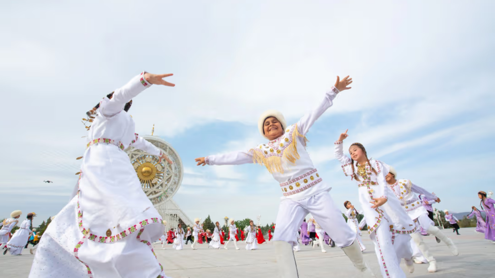
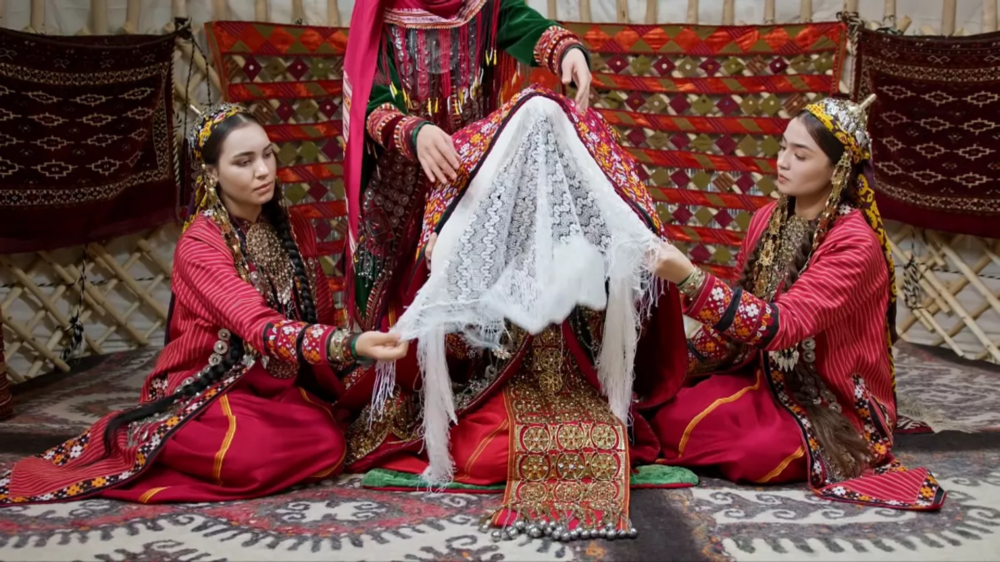
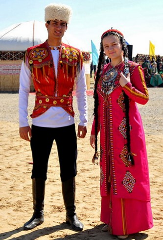
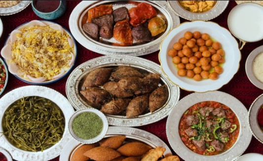
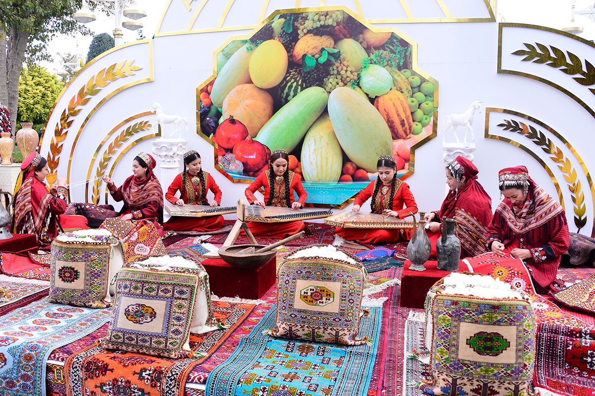

Experience the rich heritage, deep traditions, and vibrant lifestyle of Turkmenistan.

Turkmen culture is deeply rooted in nomadic traditions passed down through generations. Respect, hospitality, and strong family ties define everyday life. Visitors are often welcomed warmly, reflecting the country’s long-standing values of generosity and honor.
Bright colors and intricate embroidery characterize traditional Turkmen clothing. Men often wear telpek hats, while women wear beautifully decorated dresses with detailed patterns that reflect identity and heritage.


Turkmen cuisine features hearty meals like plov, kebabs, and fresh bread baked in traditional ovens. Meals are often shared, emphasizing unity and hospitality among families and guests.
Festivals in Turkmenistan celebrate history, horses, and national pride. Events like Horse Day highlight the importance of the Akhal-Teke breed, a symbol of strength and beauty in Turkmen culture.

Dive deeper into the country's landscapes, history, and experiences.
Explore Now